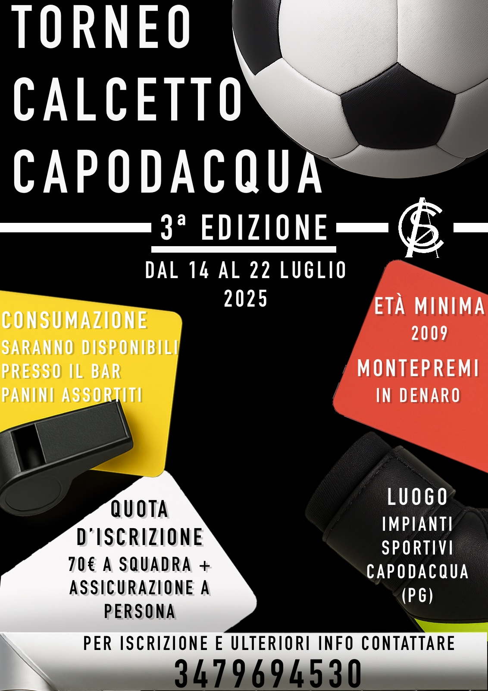
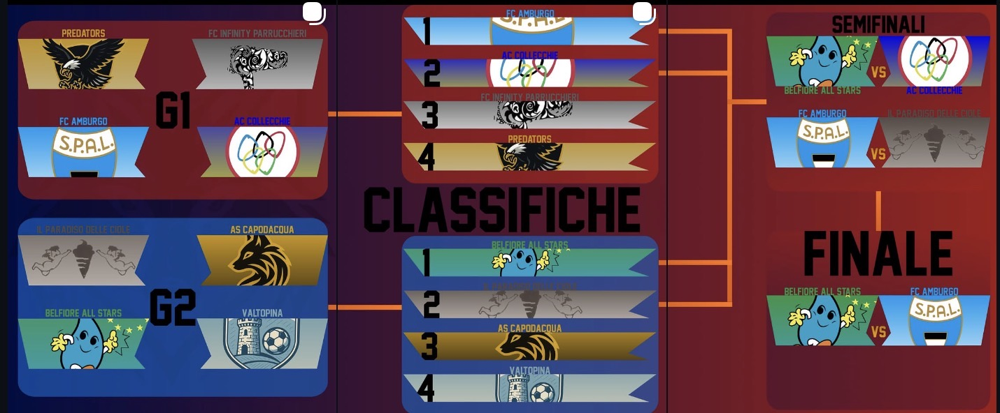
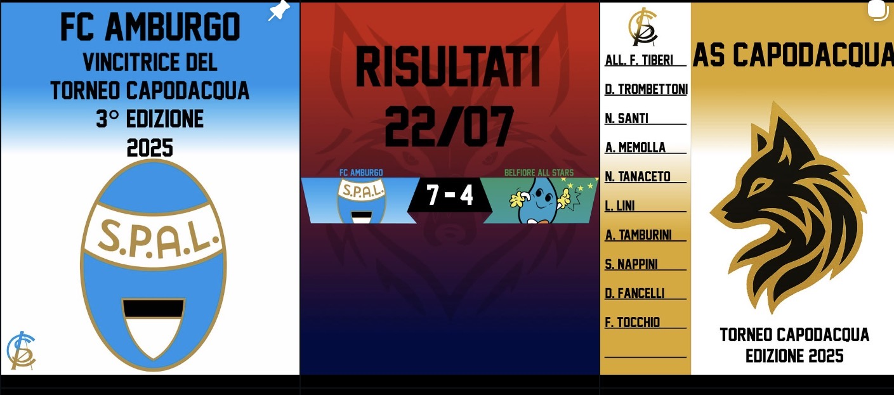

Sito ufficiale · 4ª Edizione
Torneo Calcetto Capodacqua
Dal 06/07 al 14/07/2026 · Campo di Calcetto Capodacqua, Foligno (PG). Iscrizione: 100€ a squadra + assicurazione per ogni giocatore.
Edizione 2026
Squadre
Le squadre 2026 saranno aggiunte appena definite. Sotto trovi l'archivio 2025.
Ultimi risultati
Classifiche 2025
Girone 1
| Pos | Squadra |
|---|---|
| 1 | FC Amburgo |
| 2 | AC Collecchie |
| 3 | FC New Infinity Parrucchieri |
| 4 | Predators |
Girone 2
| Pos | Squadra |
|---|---|
| 1 | Belfiore All Stars |
| 2 | Il Paradiso delle Ciole |
| 3 | AS Capodacqua |
| 4 | Valtopina |
Tabellone 2025
Semifinali
Belfiore All Stars 9 - 4 AC Collecchie
FC Amburgo 5 - 4 Il Paradiso delle Ciole
Finale
FC Amburgo 7 - 4 Belfiore All Stars
Campione: FC Amburgo
Media


